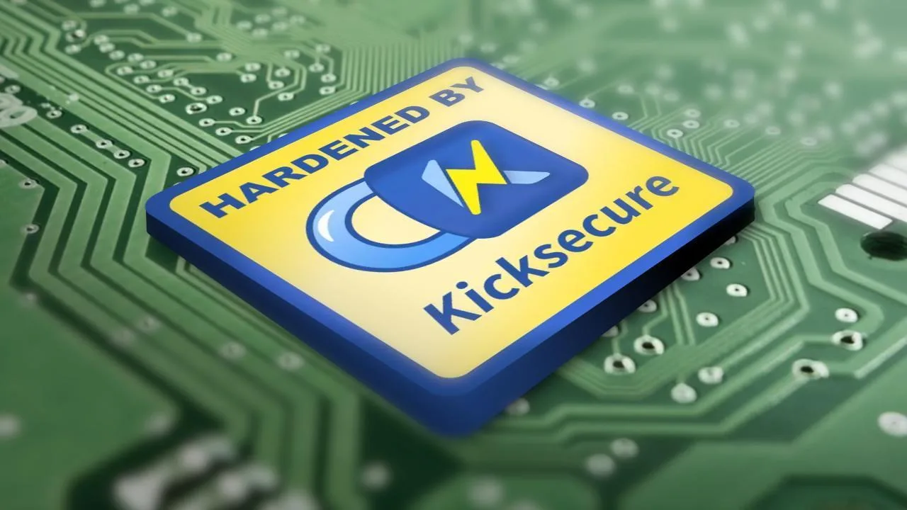

Whonix is an anonymous operating system that runs like an
app and routes all Internet traffic through the Tor anonymity
network. It offers privacy protection and anonymity online and is
available for all major operating systems.
Whonix is a free and open-source desktop operating
system (OS) that is specifically designed for advanced security and
privacy. It's based on the Tor
anonymity network, security-focused Linux Distribution
[Broken-ExtLink--no-url-was-provided], GNU/Linux and the principle of
security by isolation. Whonix defeats common attacks while maintaining
usability.

Security hardened
Whonix uses an extensively security reconfigured of the Debian base
(Kicksecure™ Hardened) which is run inside multiple
virtual machines (VMs) on top of the host OS. This
architecture provides a substantial layer of protection from malware and
IP
leaks. Applications are pre-installed and configured with safe defaults
to make them ready for use with minimal user input. Learn more.
The increasing threat of mass surveillance and repression all over
the world means our freedoms and privacy are rapidly being eroded.
Whonix is a powerful solution to this problem. Anyone who values
privacy, has business secrets, needs private communication or does
sensitive work on their desktop or online can greatly benefit from using
Whonix. Learn more.
Innovative Architecture
Whonix consists of two VMs: the Whonix-Gateway™ and the Whonix-Workstation™. The former runs Tor
processes and acts as a gateway, while the latter runs user applications
on a completely isolated network. This innovative architecture allows
for maximum privacy, keeps applications in check and makes DNS leaks
impossible. Learn
more.
Now we're diving deep into what makes Whonix great.
We'll provide a more detailed look and lots of links for you to even
more thoroughly study Whonix.
Introduction
Whonix is a free and open-source desktop operating
system (OS) that is specifically designed for advanced security and
privacy. It's based on the Tor
anonymity network, security-focused Linux Distribution
[Broken-ExtLink--no-url-was-provided], GNU/Linux and the principle of
security by isolation.
Whonix defeats common attacks while maintaining
usability. Online anonymity and censorship circumvention is
attainable via fail-safe, automatic and desktop-wide use of the Tor
network. This helps to protect from traffic analysis by bouncing
communications around a distributed network of relays run by global
volunteers. Without advanced, end-to-end, netflow correlation attacks,
an adversary watching an Internet connection cannot easily determine the
sites visited, and those sites cannot discover the user's physical location.
[1]
Whonix uses an extensively security reconfigured of the
Debian base (Kicksecure™ Hardened). It consists of
two virtual machines -- Whonix-Gateway and Whonix-Workstation -- which are designed to be used
on a supported host OS (Host Operating
System Selection). The host OS supporting Whonix is usually the one
installed on the user's computer, but OSes installed on external drives
will also work (USB
Installation). Users choose the preferred Whonix configuration and
may use either a Type I hypervisor (Qubes-Whonix™), or a Type II hypervisor
like KVM and VirtualBox.
This architecture provides a substantial layer of protection
from malware and IP leaks. Applications are pre-installed
and configured with safe defaults to make them ready for use with
minimal user input. The user may install custom applications or
personalize their desktop without fear of information leaks that could
lead to de-anonymization. Whonix is the only actively developed OS
designed to be run inside a VM and paired with Tor. Though technically a
"desktop" operating system, the security and anonymity tools Whonix
provides also make it ideally suited for hosting secure and anonymous
onion services.
By helping users run applications anonymously Whonix aims to
preserve privacy and anonymity. A web browser, office suite, and other relevant applications come pre-configured
with security in mind. Internet traffic by Whonix is all routed through
the Tor anonymity network.
Whonix is Freedom Software and is based on
[Broken-ExtLink--no-url-was-provided] (security-focused Linux
Distribution), Tor [2], Debian GNU/Linux
[3], and the principle of security by isolation.
Whonix User Groups
Privacy is a human right. The increasing threat of
mass surveillance and repression all over the world means our freedoms
and privacy are rapidly being eroded. Whonix is a powerful solution to
this problem. Anyone who values privacy, has business secrets, needs
private communication or does sensitive work on their desktop or online
can greatly benefit from using Whonix. This includes the following. Also
see Users of Whonix.
Investigators and whistleblowers whose work threatens the
powerful. Within our isolated environment, research and
evidence can be gathered without accidental exposure.
Researchers, government officials or business-people who may
be targets of espionage. Anti-malware and anti-exploit
modifications lower the threat of trojans and backdoors.
Journalists who endanger themselves and their families by
reporting on organized crime. Compartmentalized, anonymous
Internet use prevents identity correlation between social media and
other logins.
Political activists under targeted surveillance and
attack. The usefulness of threatening the ISP in order to
analyze a target's Internet use is severely limited. The cost of
targeting a Whonix user is greatly increased.
Average computer users in a repressive or censored
environment. Easy Tor setup and options for advanced
configurations means users in repressive countries can fully access the
Internet desktop-wide, not just in their browser.
Average computer users who simply don't want all or some
aspect of their private lives uploaded, saved and analyzed.
Whonix does not silently upload identifying information in the
background.
Whonix Architecture
Whonix consists of two VMs: the Whonix-Gateway and the Whonix-Workstation. [4] The
former runs Tor processes and acts as a gateway, while the latter runs
user applications on a completely isolated network. The Whonix
architecture affords several benefits:
Only connections through Tor are permitted.
Servers can be run, and applications used, anonymously over the
Internet.
DNS leaks are impossible.
Malware with root privileges cannot discover the user's real IP
address.
Threats posed by misbehaving applications and user error are
minimized.
Hiding your identity is harder than just hiding your
IP. Internet tracking companies don't even need to know your IP
address to be able to identify you. They have multiple alternative
tracking technologies in their arsenal. Whonix provides full spectrum
anti-tracking protection.
Surveillance Technology, Impact and Whonix
Defenses
Your internet service provider (ISP) knows
which websites and when you visited but does not know the exact details.
And that even if the website is using https and you are using VPN.
[5] For example, if you are posting to a discussion
forum, your ISP or a man-in-the-middle could know the time and that you
used that discussion forum but not the exact contents of your post.
However, due to the specific timing specifically over time an attacker
could figure out who you are.
Re-identification once you are interacting with a website because
of your personal typing style or mouse movement patterns. These
behavioral fingerprints can be analyzed, including with modern machine
learning.
Many applications are not designed with anonymity in mind. Small
configuration mistakes or unsafe defaults can have privacy
consequences.
Researched, tested privacy and security defaults; anon-apps-config
Hardware identifiers and host file leaks
Some applications try to identify a system using hardware
identifiers (such as serial numbers), or accidentally access host
resources. This can weaken privacy and increase linkability across
sessions.
Techniques like Stylometry (analysis of writing style) and various
other tracking technologies can be employed to track users without the
need for IP addresses.
Whonix is a technological means to anonymity, but staying safe
necessitates complete behavioral change; it is a complex problem without
an easy solution. The more you know, the safer you can be. See Documentation.
Based on Debian
Tip: Since Ubuntu is a Debian derivative, online help
for Ubuntu most often works for Whonix.
In oversimplified terms, Whonix is just a collection of configuration
files and scripts. Whonix is not a stripped down version of Debian;
anything possible in "vanilla" Debian GNU/Linux can be replicated in
Whonix. Likewise, most problems and questions can be solved in the same
way. For example: "How do I install VLC Media Player on Whonix?" -- "The
same way as in Debian apt install vlc. Whonix does not
break anything, limit functionality, or prevent installation of
compatible software.
Based on Kicksecure
Redirection
to Kicksecure Documentation
NOT-SELFCONTAINED:
This wiki page is not self-contained by design. This It only includes
details specific to Whonix. For full understanding, please follow the
link below to the Kicksecure wiki, which provides more complete
background and instructions.
Introduction:
<a href="../Introduction/">Whonix Documentation Introduction,
User Expectations, Footnotes and References, User Expectations - What
Documentation Is and What It Is Not</a>
<a
href="./#Based_on_Kicksecure">Whonix is based on
Kicksecure™</a>: Whonix is built on top
of Kicksecure. This means it uses many of the same security tools,
design concepts, and configurations.
Inheritance:
As a result, Whonix is also <a href="../Based_on_Debian/">based
on Debian</a>.
Debian is
GNU/Linux-based: Debian is built using the GNU/Linux operating
system. GNU provides essential tools and Linux is the system's kernel
(core).
Shared
documentation benefits: Since each system is based on the one below
it, a lot of documentation and guides are shared. This reduces the need
to duplicate information.
Inherited
documentation: Most instructions and explanations are inherited from
Kicksecure or Debian, unless otherwise specified.
Shared
principles: The systems share similar security goals and setup
instructions. In most cases, users can follow Kicksecure documentation
when using Whonix.
Keep using
Whonix: This does not mean users should switch to Kicksecure.
This page only points to related, helpful information.
Where to apply
the instructions: Follow the instructions inside Whonix unless
specifically stated otherwise.
Wiki editors
notice: This information is pulled from a reusable wiki template:
<a href="../Template:Upstream_wiki/">upstream_wiki</a>.
(<a href="../Special:WhatLinksHere/Template:Upstream_wiki/">See
which pages use this</a>.)
Comparison:
<a href="../Comparison_with_Kicksecure/">Whonix versus
Kicksecure</a>
Documentation
compatibility: Because Whonix is based on Kicksecure, you can often
follow Kicksecure's instructions as long as you apply them in the right
place.
Summary:
Whonix is built on top of Kicksecure, which itself is based on
Debian. Debian is a GNU/Linux operating system. This layered
design means Whonix inherits many features, tools, and documentation
from both Kicksecure and Debian.
Click
here: Visit the related page in the Kicksecure wiki for full
documentation and background:
[Broken-ExtLink--no-url-was-provided]
Note:
Re-interpretation...
Apply the instructions inside Whonix, not inside
Kicksecure.
Kicksecure: Perform these steps inside Kicksecure.
Instead, apply the steps inside Whonix-Workstation.
Kicksecure for Qubes: Perform these steps inside Qubes
kicksecure-18 Template.
Instead, use the whonix-workstation-18 Template for
these steps.
Security by Isolation
Whonix is the best way to use Tor and provides the strongest
protection for your privacy online by hiding your real IP address,
because Whonix protects from leaks. In laymen's terms a leak
occurs if a user expects to be wholly using Tor, but instead some
application traffic bypasses Tor and is routed over the normal internet
(clearnet). A solitary leak is all that is required to de-anonymize the
user, for example via IP leaks, DNS leaks, UDP and other channels.
Even when Tor provides sufficient anonymity, it can be very
complicated or impossible for users to configure
applications so all traffic is routed through the Tor network.
The reason is networking is very complex and most applications are not
designed with anonymity or privacy in mind. Some applications like the
Tor Browser Bundle are specifically designed for anonymity and attempt
to eliminate all known leak vectors. Unfortunately, despite all best
efforts leaks have occurred in the past due to Tor Browser Bundle software defects (bugs). In such
cases, Whonix users were protected and unaffected by these leaks.
In Whonix, DNS and other related leaks (IP, DNS, UDP, ICMP)
are impossible. Even malware with root privileges cannot
discover the user's real IP address because Whonix's split-VM design
ensures all internet traffic is routed through Tor.
Whonix is divided into two VMs:
Whonix-Gateway to
enforce routing of all Internet traffic through the Tor network,
and
Whonix-Workstation
for work activities. Whonix-Workstation is unaware of its real external
IP address, which means the user's real external IP address is always
protected and leaks are impossible.
This security by isolation configuration averts many threats
posed by malware, misbehaving
applications, and user error.
This is not an empty claim -- Whonix has been audited via the
corridor (Tor traffic
whitelisting gateway) and other leak tests. In over a decade, no leaks were ever discovered. Technical
readers can refer to the Whonix technical introduction and security overview chapters for further details.
Online Anonymity via Tor
Whonix relies on the Tor network to protect a user's anonymity online;
all connections are forced through Tor or otherwise blocked. Tor helps
to protect users by bouncing communications around a distributed network
of relays run by volunteers all around the world. Without advanced,
end-to-end, netflow correlation attacks, anybody watching a user's
Internet connection cannot easily determine the sites visited, and those
sites cannot learn the user's physical location. [6]
To learn more about Tor, see Why does Whonix use Tor and read the official
documentation on the [Broken-ExtLink--no-url-was-provided]:
[Broken-ExtLink--no-url-was-provided]
[Broken-ExtLink--no-url-was-provided]
[Broken-ExtLink--no-url-was-provided]
Summary
Whonix Goals, Design and Limitations
Category
Description
Whonix is
a free and open operating system
an anti-censorship tool
the first step among many in hiding a user's identity
Whonix helps to
disguise a user's IP address
prevent internet service provider (ISP)
spying
prevent websites from identifying the user
prevent malware from identifying the user
circumvent censorship
Whonix is not
a one-click anonymization solution, since anonymity is a complex
behavioral and technical problem in a highly surveilled world
[7]
Releases
Whonix Version
Each Whonix release is based on a particular version of Debian:
VMs: One month after a new stable version of
Debian is released, Whonix VMs may no longer be supported on any
older version of Debian. All users must upgrade the Debian platform
promptly after the deprecation notice to continue using Whonix
safely.
ISO: One month
after a new stable version of Whonix is released, older versions
will no longer be supported. All users must upgrade the Whonix platform
promptly to remain safe.
We aim to announce deprecation events one month in advance to
remind users to upgrade on the whonix.org news
forum. Stay Tuned! All
users must upgrade the respective platform promptly to remain
safe.
Next Steps
Learning more about Whonix is the best way to determine whether it is
a suitable solution in your personal circumstances. The following
chapters are recommended:
The Warning page to
understand the security limitations of Whonix and Tor.
Current practical, low-latency, anonymity designs like Tor fail when
the attacker can see both ends of the communication channel (traffic
going into and out of the Tor network). If
you can see both flows, simple statistics based on data volume and
timing can determine whether they match up.
Current practical, low-latency, anonymity designs like Tor fail when
the attacker can see both ends of the communication channel (traffic
going into and out of the Tor network).
[Broken-ExtLink--no-url-was-provided] simple statistics can determine
whether they match up.
Readers of the Whonix
documentation will quickly learn that one-click anonymization
solutions simply do not exist and will likely never be
developed.
Whonix About wiki page Copyright (C) Amnesia
Whonix About wiki page Copyright (C) 2012 - 2026 ENCRYPTED SUPPORT LLC
<adrelanos(at)whonix.org
(Replace (at) with
@.)Please DO
NOT use e-mail for one of the following
reasons:Private
Contact: Please avoid e-mail whenever possible. (<a
href="../Contact/#Private_Communications_Policy">Private
Communications
Policy</a>)User
Support Questions: No. (See <a
href="../Support/">Support</a>.)Leaks
Submissions: No. (<a href="../Contact/#No_Leaks_Policy">No
Leaks
Policy</a>)Sponsored
posts:
No.Paid
links:
No.SEO
reviews:
No.Advertisement
deals:
No.Default
application installation: No. (<a
href="../Contact/#Default_Application_Policy">Default Application
Policy</a>)>
This program comes with ABSOLUTELY NO WARRANTY; for details see the
wiki source code.
This is free software, and you are welcome to redistribute it under
certain conditions; see the wiki source code for details.
Gratitude is expressed to JonDos
for permission
to use material from their website. The "Summary" chapter of the Whonix
Design and Goals wiki page contains content from the JonDonym
documentation Features
page.
We believe security software like Whonix needs to remain Open Source and independent. Would you help sustain and grow the project? Learn more about our 11 year success story and maybe DONATE!